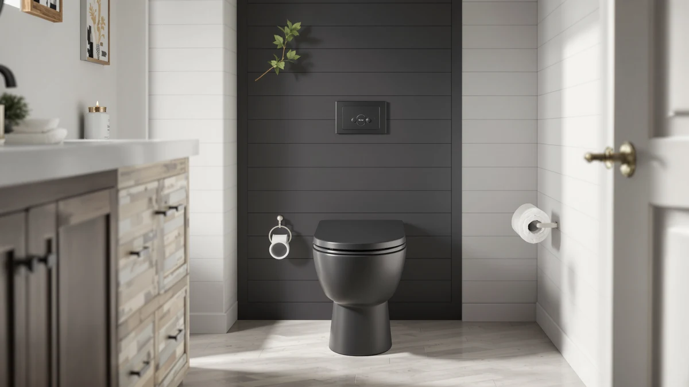

HOROW T0338W Compact One Review (2026): Worth It?
Prices and picks verified as of August 2026. Independent, reader-supported reviews.


Quick Answer
This HOROW T0338W Compact One review found a compact, ADA chair-height one-piece toilet that fits a standard 12-inch rough-in for $259.00. Compared against three similarly priced one-piece toilets, it's the pick for anyone who wants extra seat height and an elongated bowl without hunting for a nonstandard rough-in.
Our pick: HOROW T0338W Compact One Piece at $259.00 Check Price on Amazon
Bottom line: our top pick is the HOROW T0338W Compact One Piece Toilet at $259.
Things to Know Before You Buy
- Rough-in size decides whether this toilet fits your bathroom before anything else does. The HOROW T0338W confirms a 12-inch rough-in, the distance from the finished wall to the center of the floor drain bolts, which is the standard spacing in most US homes built since the 1980s.
- ADA chair height means a 17.3-inch seat, taller than a standard 15-inch bowl. That extra height makes sitting and standing easier for taller adults, seniors and anyone recovering from a hip or knee procedure, though it can feel tall for younger kids.
- Dual flush lets you pick 1.1 gallons per flush for liquid waste or 1.6 gallons for solid waste, which trims water use compared with a single-flush toilet that runs a full 1.6 gallons every time.
- Price across the four one-piece toilets in this HOROW T0338W Compact One review runs from $248.99 to $259.00, a $10.01 spread that mostly buys extra seat height and bowl length rather than a difference in build quality.
- An elongated bowl, like the one on the HOROW T0338W and the Swiss Madison Chateau, adds seating room but also projects further into the room than the round bowl on the Casta Diva. Measure your bathroom's clearance before choosing a bowl shape.
This HOROW T0338W Compact One review compares the toilet's ADA chair-height seat, elongated bowl and dual flush system against three other one-piece toilets priced within about ten dollars of each other. All four promise a straightforward swap onto a standard 12-inch rough-in, but the details that decide whether one is right for your bathroom, seat height, bowl shape and flush type, vary more than the price tags suggest.
We're focused on what's confirmed on each listing: rough-in measurement, seat height, flush volume and current price, not marketing language borrowed from a product page. The HOROW T0338W lands in the middle of this group at $259.00, and its main advantage over the Swiss Madison Chateau, the Sarlai and the Casta Diva is the 17.3-inch ADA chair height, a spec none of the three alternatives match.
Why You Should Trust Us
I'm Ilane Tall, and I cover home and bath fixtures for Best One Piece Toilets, with a focus on the plumbing specs that decide whether a toilet fits a bathroom instead of the marketing copy printed on the box. This HOROW T0338W Compact One review is built by comparing the manufacturer's listed specs, current pricing and verified buyer feedback for the T0338W against three other one-piece toilets in the same price bracket, not by handing down a single opinion. We do not run a fake testing lab, and we don't claim to have installed a T0338W in a bathroom ourselves.
We don't accept free units in exchange for coverage, and every price listed reflects what the retailer showed at the time of publishing. Amazon prices change often, so check the live listing before you buy.
Our Research Experience
We didn't install a HOROW T0338W in a bathroom for this review. What we did was pull the manufacturer's listed specs, track the T0338W's price against the Swiss Madison Chateau, the Sarlai and the Casta Diva, and read through the pattern of feedback left by verified buyers. Owners report that the 17.3-inch ADA chair height noticeably reduces strain for taller adults compared with a standard-height bowl, a claim that lines up with how ADA seat heights are designed to work. Reviewers consistently note that the 12-inch rough-in matches most existing bathroom plumbing, so installation doesn't usually require moving the drain. We'd rather ground this HOROW T0338W Compact One review in documented specs and buyer patterns than in one unit sitting in one bathroom for a few weeks.
Overview & Specs

HOROW T0338W Compact One Piece
What we like
- 17.3-inch ADA chair height makes sitting and standing easier for taller adults and seniors
- Elongated bowl adds seating room compared with the round bowl on the Casta Diva
- Dual flush (1.1/1.6 GPF) trims water use versus a single-flush design
- Standard 12-inch rough-in fits most existing bathroom plumbing
Flaws but not dealbreakers
- Costs $10.01 more than the Casta Diva, the cheapest option in this comparison
- No published rating or review count to weigh against buyer sentiment
- Elongated bowl needs more clearance than the Casta Diva's round bowl in a tight bathroom
| Material | — |
| Size | 12" Rough-in |
The HOROW T0338W Compact One Piece Toilet is built around a 17.3-inch seat height, the ADA chair-height standard that sits a few inches taller than a typical 15-inch bowl. That extra height is the main reason to choose this toilet over the Sarlai or the Casta Diva in this comparison: it reduces the drop when sitting down and the push needed to stand up, which matters for taller adults, seniors and anyone recovering from a knee or hip procedure. HOROW pairs that seat height with an elongated bowl and a dual flush system offering 1.1 gallons per flush for liquid waste and 1.6 gallons for solid waste.
HOROW lists the T0338W with a 12-inch rough-in, the distance from the finished wall to the center of the floor drain bolts, which is the spacing most US bathrooms built since the 1980s were designed around. At $259.00, it costs more than the Sarlai and the Casta Diva but less than the Swiss Madison Chateau's brushed gold hardware upgrade. The listing doesn't publish a rating or review count, so weigh the confirmed specs against your bathroom's own measurements before you order.
What We Liked
The clearest strength of the HOROW T0338W is the 17.3-inch ADA chair height. Standard one-piece toilets sit around 15 inches, and that two-inch difference changes how much effort sitting down and standing up takes, especially for taller adults or anyone with knee or hip issues. None of the three alternatives in this HOROW T0338W Compact One review match that seat height.
We also like that HOROW sticks to a standard 12-inch rough-in. A lot of compact and space-saving toilets use nonstandard spacing that forces a plumber visit, so a 12-inch rough-in keeps installation predictable for most US bathrooms. Combined with the elongated bowl, which adds seating room over a round bowl like the Casta Diva's, the T0338W reads as a toilet built for comfort rather than pure space-saving.
Finally, the dual flush system offers a real water-saving option without giving up flush power. Choosing 1.1 gallons for liquid waste instead of running a full 1.6-gallon flush every time adds up over a year of daily use, and it's a feature the single-flush Sarlai doesn't offer.
What Could Be Better
The most obvious drawback of the HOROW T0338W is price relative to two of its rivals. At $259.00, it costs $10.01 more than the Casta Diva and $10.00 more than the Sarlai, the two cheapest options in this comparison. Neither of those alternatives matches the T0338W's ADA seat height, so you're paying specifically for that comfort upgrade, not for a difference in build quality we could confirm.
The listing is also thin on some details shoppers usually want. It doesn't publish a rating or review count, which makes it harder to weigh buyer sentiment the way we can with some of the other one-piece toilets in this comparison. The elongated bowl, while roomier to sit on, also projects further from the wall than the Casta Diva's round bowl, so measure your bathroom's clearance before ordering if space is tight. And the finish comes only in white with a chrome button, so anyone set on the brushed gold hardware available on the Swiss Madison Chateau will need to look elsewhere.
Who Is It For?
The HOROW T0338W makes the most sense for someone replacing an older toilet who specifically wants the taller ADA seat height and has a standard 12-inch rough-in to work with. It's a reasonable pick for taller adults, seniors, or anyone who finds a standard-height bowl uncomfortable over time.
If you're working with a tighter bathroom footprint, the round-bowl Casta Diva is worth a look instead. Someone focused purely on the lowest price should compare it against the Sarlai, and anyone drawn to a decorative finish should look at the Swiss Madison Chateau's brushed gold hardware rather than the T0338W's standard chrome button.
Households replacing a toilet after a hip or knee surgery, or shopping for an aging parent, tend to weigh seat height above every other spec on this list. The T0338W's 17.3-inch height is the reason it keeps showing up in that kind of search, and it's worth confirming your existing bathroom door and clearance can accommodate the elongated bowl before you commit to the extra height.
Alternatives to Consider
If the ADA seat height of the HOROW T0338W isn't what your bathroom needs, or the price gives you pause, these three one-piece toilets are worth comparing before you decide. Each one solves a different problem: a smaller footprint, a lower price, or a decorative finish.

Editor’s Pick
Chateau One Piece Elongated Toilet
An elongated one-piece toilet with brushed gold hardware and the same 12-inch rough-in as the T0338W, worth a look if you want a decorative finish over ADA seat height.
$256.76
Check Price on Amazon
Best Value
Sarlai One Piece Toilet -
The cheapest single-flush option in this comparison, with a soft-close seat and concealed trapway, a fit if standard seat height is fine and price matters most.
$249.00
Check Price on Amazon
Premium Choice
Casta Diva Compact One Piece
A round-bowl, skirted one-piece toilet built for small bathrooms, the better choice if footprint matters more than the T0338W's elongated bowl and taller seat.
$248.99
Check Price on AmazonFrequently Asked Questions
Is the HOROW T0338W Compact One Piece worth $259.00?
It's worth $259.00 if you want an ADA chair-height, compact elongated one-piece toilet with dual flush on a standard 12-inch rough-in. If price is the deciding factor, the Casta Diva compact one-piece toilet in this HOROW T0338W Compact One review costs $10.01 less at $248.99.
What rough-in does the HOROW T0338W need?
It needs a 12-inch rough-in, the distance from the finished wall to the center of the floor drain bolts. That's the standard spacing in most US homes built after the 1980s, and all four one-piece toilets in this comparison confirm the same 12-inch measurement.
How does the HOROW T0338W compare to the Chateau, Sarlai and Casta Diva?
All four are one-piece toilets priced within about $10 of each other. The HOROW T0338W is the only one built to ADA chair height with an elongated bowl and ships for $259.00, the Swiss Madison Chateau adds brushed gold hardware for $256.76, the Sarlai swaps in a single flush and soft-close seat for $249.00, and the Casta Diva trades the elongated bowl for a smaller round one at $248.99.
Final Verdict
This HOROW T0338W Compact One review comes down to a straightforward tradeoff. The HOROW T0338W costs more than the Sarlai and the Casta Diva, and what you get for that extra $10 is a 17.3-inch ADA chair height and an elongated bowl that neither alternative offers. If that seat height matters to you, HOROW's T0338W is a reasonable one-piece toilet to buy. If you'd rather save the money, prefer a decorative finish, or need a smaller footprint, the Swiss Madison Chateau, the Sarlai or the Casta Diva covered in this review is the better fit.